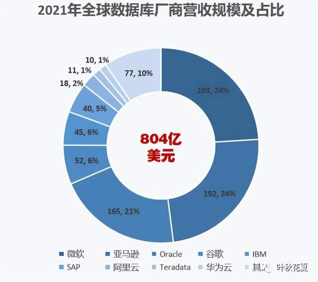
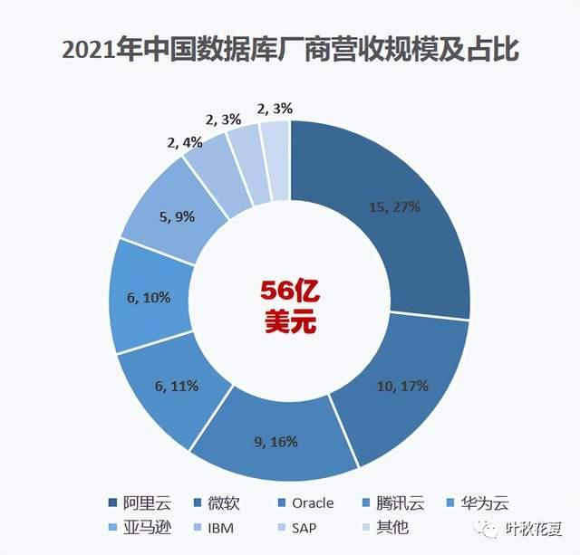
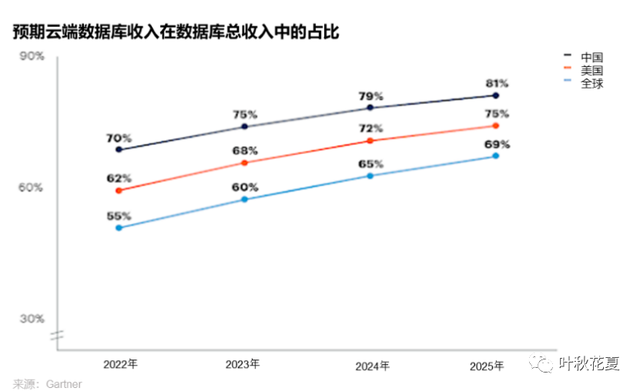

我国数据库三大发展趋势：国产化、上云、开源
数据库是组织、存储、管理、分析数据的系统，在信息系统的软件和硬件之间起到承上启下的作用，是IT行业重要的基础软件。展望未来，国内数据库市场的发展将呈以下三大趋势：
1.国产化战略加速数据库本土化进程
数据库市场上，多年来国外厂商都处于绝对的主导地位。2021年，全球数据库市场规模803.6亿美元，五大巨头微软、亚马逊、Oracle、谷歌、IBM共占据81%的市场份额，国内厂商阿里云、华为云市占率分别仅为2%和1%。

但是近两年，我国大力发展国产化战略，从党政到八大关键行业（金融、电信、石油、电力、交通、航空航天、教育、医疗等），加快推动包括数据库在内的信息技术的本土创新，鼓励企业采购国产化生态厂商的产品和服务，大大促进了国产数据库的发展。
据Gartner数据，2021年我国数据库市场规模56亿美元，同比增长31.4%，本土厂商表现不俗。阿里云一骑绝尘，拿下27%的市场份额，腾讯云、华为云亦分别拥有10%、9%的市场份额。
预计未来随着本土厂商产品能力的成熟及其迁移工具和服务的不断进步，国产数据库将成主流。

2.数据库加速向公有云迁移
在国家大力发展云计算、鼓励“上云用数赋智”的大背景下，国内企业正在推动数据库向云端迁移和云原生能力的使用，以实现资源弹性和业务敏捷性，同时节约成本。
未来几年，随着阿里、华为、腾讯等企业的不断创新，数据库的云迁移将进入客户的核心业务场景。预计到2025年，中国81.2%的数据库营收将在云端产生，该比例超过全球（69%）和美国（75.2%）。

3.开源技术的大力推广带动开源数据库的兴起和快速演进
在政府机构和云服务提供商的共同推动下，高度活跃的开源社区带动了开源数据库产品的兴起和快速演进，促使直接或间接参与开源的本土数据库加快其能力迭代和市场渗透。
开源数据库的发展对企业、供应商、政府来说也是多赢：
企业：减少预付成本，实现快速部署和灵活定制。目前已有大量企业成为了MySQL、PostgreSQL的忠实用户。
供应商：加速产品迭代、市场渗透，提升市场认知度。近几年，腾讯、华为、阿里等互联网大厂频频宣布开源数据库产品。
政府：加速国内信息技术创新，实现核心领域关键技术自主可控。
据赛迪智库数据，2021年国内数据库市场上开源数据库市占率65%，MySQL、PostgreSQL、MongoDB和Redis是当前最受欢迎的开源数据库。
其中MySQL数据库凭借其稳定性能、低成本、高可用、成熟生态等优势，装机量领先，达到42.6%。未来随着开源数据库技术的不断成熟，预计市占率会不断提升。
除国产化、上云、开源几大趋势外，从市场需求来看，由于独特的本土商业环境（如海量互联网用户、多触点电子商务生态和国家产业举措），国内企业更关注增强型事务、湖仓一体、分布式事务型数据库和云原生数据库能力。
预计未来五年，中国的数据库技术将继续沿着自身独特的发展轨迹演进。